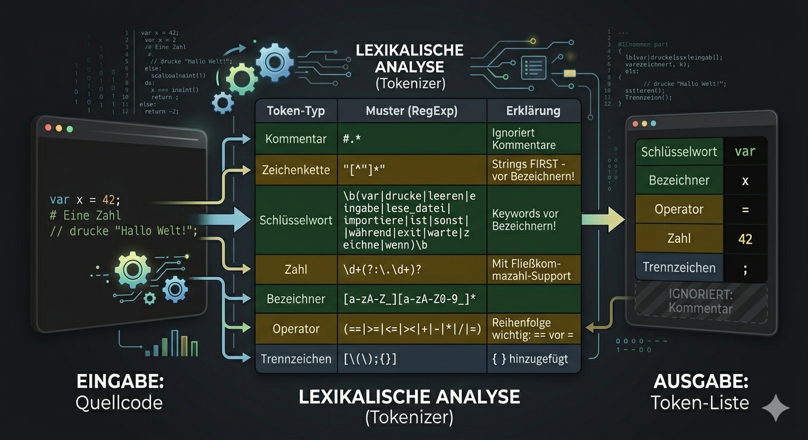

In meinem Projekt geht es um die Entwicklung einer Programmiersprache die sehr Simple und einfach zum lernen ist
Der erste Schritt ist das Lexing, dabei wird der Quellcode in Tokens umgewandelt, die die grundlegenden Bausteine des Codes darstellen.

KI Generiertes Bild
Der zweite Schritt ist das Parsing, dabei werden die Tokens in eine abstrakte Syntaxbaum (AST) umgewandelt, der die Struktur des Codes darstellt.
Der dritte Schritt ist die Code Generierung, dabei wird der AST in ausführbaren Code umgewandelt.
Wo ist der unterschied zu komplexeren Sprachen wie bsp. Java?
drucke "Hello World"Im vergleich zu Java:
public class HelloWorld {
public static void main(String[] args) {
System.out.println("Hello World");
}
}